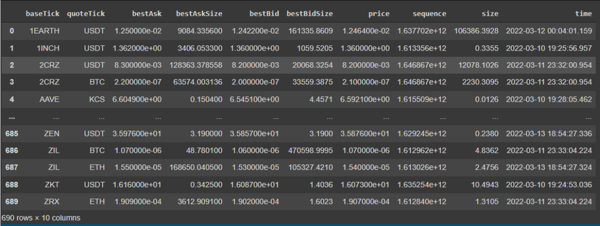
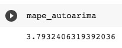
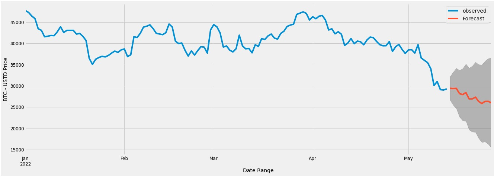
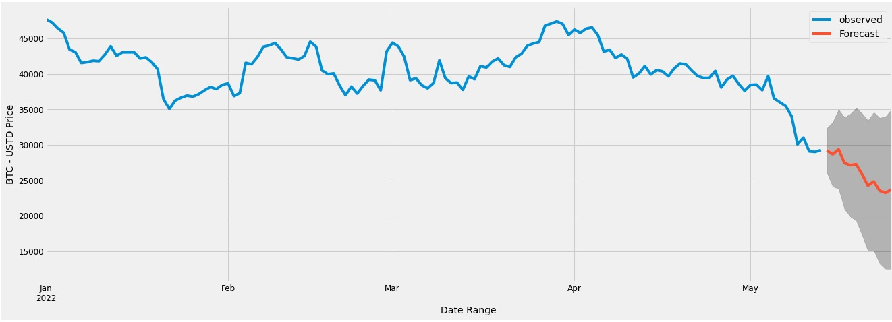
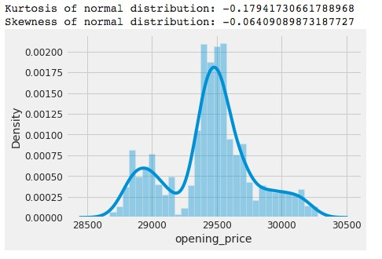
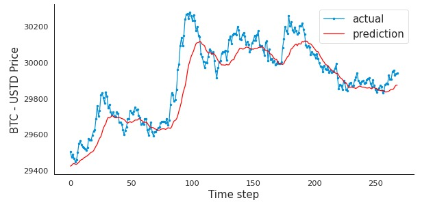

Report
Abstract
The purpose of this study is to create a crypto arbitrage bot which allows users to execute automated trades. Triangular arbitrage is chosen as the arbitrage method, so the aim is to take advantage of the price differences between three different pairs. Kucoin is the chosen exchange for this project. The Bellman-Ford algorithm is also used as a second arbitrage model, which computes the shortest path in a single source vortex.
Introduction
Arbirtrage is buying an asset on an exchange and selling it at another exchange for a higher price. It is a very straightforward process for traders. When a stock’s price is lower on a foreign exchange, traders buy it from there and sell it on the local exchange. The price on the foreign exchange is considered “undervalued” because there are delays in adjusting the prices on different exchanges. However, detecting arbitrage opportunities is a very hard work, and taking advantage of them is even harder. Trading arbitrage opportunities manually is near impossible because they occur and dissappear in seconds. For that reason, it requires advanced programs and computer equipments to automate this process. There are already numerous programs in every exchange which try to take advantage from these discrepancies. There are different types of arbitrages, such as pure arbitrage, merger arbitrage, triangular arbitrage, etc. In this project, triangular arbitrage is studied and applied in crypto market. If a price disparity between three foreign currencies happens when their exchange rates do not exactly line up, resulting in triangular arbitrage. In other words, triangular arbitrage exploits market inefficiencies, and help market to become efficient. Below example shows how the triangular arbitrage works between the fiat currencies EUR, USD, and GBP.
Example for triangular arbitrage: Suppose you have $1 million, and you are provided with the following exchange rates: EUR/USD = 1.1586, EUR/GBP = 1.4600, and USD/GBP = 1.6939. With these exchange rates there is an arbitrage opportunity: Sell dollars to buy euros: $1 million ÷ 1.1586 = €863,110 Sell euros for pounds: €863,100 ÷ 1.4600 = £591,171 Sell pounds for dollars: £591,171 x 1.6939 = $1,001,384 Subtract the initial investment from the final amount: $1,001,384 – $1,000,000 = $1,384 From these transactions (assuming no transaction costs or taxes), you would receive an arbitrage profit of $1,384 (What Is Triangular Arbitrage?, 2021).
Triangular arbitrage is widely studied before from different aspects mostly in foreign exchange trading platforms. People practice triangular arbitrage between fiat currencies like the example above. While the analysis of Aloosh and Bekaert (2017) aims at controlling for the triangular arbitrage, our project tries to charactrize and take advantage from arbitrage opportunities. Another research from Piccotti (2018) uses 5-minute period in his quote revisions, while our project tries to detect arbitrage opportunities in milliseconds. Speed is important while trading arbitrage, but in crypto world it is even more essential. The crypto market’s volatility is extremely higher than foreign exchange market, thus working with shorter time intervals is necessary. Another constraint to trade arbitrage is the number of opportunities over the years. According to the examination of time series data from 1999 to 2009, a decrease has been found in the number of triangle arbitrage possibilities (Ito, 2012). This is expected and can be normalized because the market becomes more efficient over the years with the advancement of the technology. However, it is never perfect, so there is still room for users to take advantage from price discrepencies.
There has been much research about market discrepancies and arbitrage trading. Different methods and various types of models have been used to trade arbitrage opportunities. Gebarowski et al. (2019) aimed to show the prediction power of q-detrended cross-correlation coefficient stemming when it is practiced over historical time series of exchange rates for certain currencies in their research. They investigated how financial markets create arbitrage opportunities by analyzing the delicacy of different statistical properties. Another study from Lin et al. (2011) analyzed cross-correlations in the stock exchange via using time-delay variant of DCCA (detrended cross-correlation analysis) method.
In research from Gradojevic et al. (2020), it has been found that high frequency traders’ movements are supported by triangle arbitrage, which occurs in a millisecond trading environment. In their study, they used wavelet-based regression approach which allowed them to find 80-100 arbitrage opportunities in a day in Foreign Exchange (FX). Expectedly, these aberrations are brief, lasting between 100 and 500 milliseconds. The average profit ranged between 0.5 and 0.75 basis points. However, as mentioned earlier, the volatility in the cryptocurrency market is higher. In our model, we were able to detect 3 different arbitrage opportunities in one minute with much higher profit margins. The same study from Gradojevic et al. (2020) suggests that currencies with low cross-correlation with others tend to have higher profit rates in arbitrage opportunities. Additional research from Knif et al. (1995) used frequency-embedded spectral approach to investigate the connection between two European stock exchanges. They found the market dependence can be described in a manageable way by using multiscale resolution of stock market performance and volatility.
What is a Crypto Trading/Arbitrage Bot?
Automated trading started in the 1980s. Since then, it has been used and developed by institutional investors and large trading firms for different purposes. It is also known as algorithmic trading by investors. Nowadays, algorithmic trading composes 60-70% of the total equity trades in the US market. It is 100% legal, and preferabed by users due to its ability for high frequency trading. The investors are able to trade 7/24 with the help of these computer programs without spending days and nights on their computers. Once they setup their parameters, the program is ready to execute trades on selected currencies. The first product invented for this purpose was Automated Trading Desk (ATD). MacKenzie (2016) explained that ATDs were primarily automated marketmakers in his research. They were invented to replace NYSE (New York Stock Exchange) specialists whose role was to buy an asset from a given price and sell it for a higher price. Nevertheless, relying on people makes this process slow, and it is very fragile against human mistakes. While ATDs make this process significantly faster and better, they are not considered as the official marketmakers.
Trading bots can be considered a type of ATDs. They are computer programs are programmed to automatically execute buy and sell orders on an exchange, based on a trading strategy. There are various service providers on the market, not just for trading, but for arbitrage trading as well. Users can either choose an in-built trading strategy or make their own with their favorite indicators and currency pairs. Arbitrage bots have the same concept as the trading bots, but their strategy is based on making profit from price differences. For example, Pionex is a crypto trading bot provider which also offers arbitrage bot. Their system is based on opening a hedge position in perpetual futures market on people’s spot crypto positions. If a client has $1000 invested Ethereum (ETH) in spot, the bot opens a short position worth of $1000 on ETH-USDT pair. Since long position holders pay a funding fee to short position holders every 8 hours, their earnings and losses balances each other, but the earnings from funding fee is their profit. If the investors hold short positions more than the long positions, this strategy will not work. However, the funding rate (a ratio shows the balance between the long and short positions) is mostly positive, and this strategy can make money to the investors, especially in bullish market cycles.
Triangular arbitrage bots are slightly different than regular arbitrage bots because of the concept of triangular arbitrage. Rather than trading an asset in different exchanges, triangular arbitrage focuses on the selected three trading pairs and trades them in the same exchange. Multiple opportunities are created in crypto market for triangular arbitrage trading. Due to its high volatility and non-stop market structure, crypto currency market is a gem for most traders.
Triangular arbitrage works in the same logic as in foreign exchange market. It exploits from the market inefficiencies in crypto market. Below example explains how it works:

Figure 1 - Triangular Arbitrage
Parameters of Our Triangular Arbitrage Bot
In this study, Kucoin exchange is used for analysis. Necessary API keys are generated to gather all the coins’ prices in Kucoin. At first, the coin prices were gathered for 5 minutes, and the analysis were made in this dataset. Taker, and maker fees are adjusted to 0.001 according to real fees applied in Kucoin. Fiat unit per trade is adjusted to 50 US Dollars. To avoid small profit margins, minimum percentage of profit margin to display is adjusted to 0.1%. This adjustment was necessary because smaller profit margins get lost by trading fees, and can cause the trader to lose money on trades. For that reason, any trade opportunity needs to have at least 0.1% to be executed. The model also calculates two different arbitrage opportunities for given three currencies. These are defined as forward arbitrage, and reverse arbitrage. The model executes the arbitrage opportunity with higher profit margin with the constraint of being more than 0.1%.
Dataset
In this study, the dataset is gathered from Kucoin exchange. Firstly, API keys are generated on Kucoin. Then, these API keys are used to gather data from the exchange. These API keys are also necessary to execute orders automatically. After generating API keys, they are put in the “exchangelive.py” script to gather real-time trading data for all crypto currencies in Kucoin. The dataset consists of the pairs’ ticker, best ask price, best bid price, best ask trade size, best bid trade size, price, sequence, trade size, and timestamp. It is necessary to have the real time data to find triangular arbitrage opportunities. It is also necessary to have all the pairs in the exchange, so no opportunities can be missed.

Figure 2 - ETL dataset
{kind=link}
Exploratory data analysis
The dataset contains all the trading pairs in the Kucoin exchange for a given time. There are 10 columns and 690 rows, meaning there are 690 trading pairs. From the 10 columns three of them have object data type and the others are float data type.

Figure 3 - Describe function exploration
BTC/TUSD has the highest price in this dataset. It is expected that Bitcoin has the highest price as leading and the first coin in crypto exchange. NFT/USDT trading pair has the biggest trading size in this dataset.

Figure 4 - Size column sort function exploration
When we analyzed the correlation between the columns, it was obvious that there was a positive correlation between bestbidSize and size columns. For all the trading pairs, it is understandable that the bidders increases the size of the total trades.

Figure 5 - Correlation across bestbidSize and Size columns
Another interesting correlation is between Bitcoin’s price and trading size. While it was observed that there was negative correlation between these two, there was positive correlation between bestbidSize and the price. On the other hand, these correlations are positive for Ethereum’s trading pairs.

Figure 6 - Correlation across BTC size and price

Figure 7 - Correlation across ETH size and price
Price Prediction with Time Series Analysis
In this study, we did time series analysis to have a better understanding of the price movements in crypto currencies. We used AUTOARIMA, SARIMAX, and LSTM models to analyze Bitcoin’s price movements in time. Since it is a highly volatile market, it is hard to predict the future price compared to other crypto currencies. Average true range is larger compared to regular stock exchange. Price prediction is important because arbitrage opportunities can be gone in seconds if the market is in a down trend. Even though the trades are executed very quickly, an instant drop in the Bitcoin’s price can take away the potential profits and cause the trader to lose money. Since, the crypto currencies’ prices are highly connected to each other, a price decrease in Bitcoin affects the entire market instantly. For that reason, this price analysis helps traders understand when to execute arbitrage trades. It is less risky to do arbitrage in an uptrend market.
AUTOARIMA, Autoregressive Integrated Moving Average, model is used to better understand and forecast future trends. It is a statistical analysis model that uses time series data. It is autoregressive because it uses past values to predict future values. It is used in statistics and econometrics to track occurrences across time. In our study, our historically time series data is aggregated by the daily. Because of the viotility of the crypto market, as seen recently Luna and Terra, it is extremely difficult to predict future price point. For this reason, we only analyze large marketcap currencies for EDA/Time Series analysis such as BTC.
 Figure 8 - AUTOARIMA Model Construction and Parameters Setting - p d q value are automatically generated within the AUTOARIMA model.
Figure 8 - AUTOARIMA Model Construction and Parameters Setting - p d q value are automatically generated within the AUTOARIMA model.
 Figure 9 - AUTOARIMA Model - Model was constructed using data from 1/1/2022 through 5/13/2022. Data from 5/02/2022 through 5/13/2022 was without to evaulate performance.
Figure 9 - AUTOARIMA Model - Model was constructed using data from 1/1/2022 through 5/13/2022. Data from 5/02/2022 through 5/13/2022 was without to evaulate performance.
 Figure 10 - AUTOARIMA MAPE Score - 3.79%
{kind=link}
 Figure 11 - AUTOARIMA Model Forecasting - 14 days into the Future, expecting a decrease in price.
{kind=link}
SARIMAX, Seasonal Autoregressive Integrated Moving Average, is another model which uses past data to better understand and predict future values. SARIMA model takes seasonal trends into consideration, which is the main difference from AUTOARIMA model. In our study, our historically time series data is aggregated daily. Because of the viotility of the crypto market, as seen recently Luna and Terra, it is extremely difficult to predict future price point. For this reason, we only analyze large marketcap currencies for EDA/Time Series analysis such as BTC.

Figure 12 - SARIMAX Model Construction and Parameters Setting - p d q value are based on the lowest AIC score previously determined.

Figure 13 - SARIMAX Model - Model was constructed using data from 1/1/2022 through 5/13/2022. Data from 5/02/2022 through 5/13/2022 was without to evaulate performance.

Figure 14 - SARIMAX MAPE Score - 3.81%

Figure 15 - SARIMAX Model Forecasting - 14 days into the Future, expecting a decrease in price.
{kind=link}
LSTM, Long Short-Term Memory is based on the Recurrent Neural Network (RNN) architecture. It is widely used in Natural Language Processing along with time series analysis. Unlike traditional Recurrent Neural Networks, LSTM utilizes short-memory by using a series of gates, each which has it own Recurrent Neural Network. Based on the probabilistic model with the LSTM model manages the datapoints. When a prediction is made, it is fed back into the model in order to predict the next point within that sequence. Error is introduced with each new prediction. In order to aviod gradienting issues, values are manuplated through tanh and sigmoid activation function prior to entering and leaving the gate.

Figure 16 - LSTM Architecture
For the LSTM aspect, our historically time series data is aggregated by the minute range. Again, because of the viotility of the crypto market, we only analyze large marketcap currencies for EDA/Time Series analysis such as BTC.

Figure 17 - Histogram - Understanding BTC Price Movement
{kind=link}

Figure 18 - Historically Price Movement - BTC

Figure 19 - Histogram and QQ Plot

Figure 20 - High P value indicates poor model performance

Figure 21 - LSTM Model Construction

Figure 22 - Performance Metric Evaluation

Figure 23 - Epochs Over Loss - LSTM

Figure 24 - LSTM - Prediction Verus Actual
{kind=link}
How does our bot work?
In this model there are multiple scripts generated for different purposes. In this section, we will dive into these scripts and explain how they work.
Kucoinlive.py
Firstly, configuration yaml is loaded and dictionary of setting is returned in this script. Then, log files are created with the date stamp added on each filename to clarify them for users. Kucoin API keys are entered here for data collection. After that, the real time coin price data are collected and saved in these log files. The data collected is also used to create tables. In these tables there is information about the coin’s best ask price, best bid price, best ask size, date stamp, etc. Below image is an example for these tables. Also monitors spot trades. Each and every change in account balance is displayed to have full knowledge on account balance. The changes and trades are stored in a database.

Figure 25 - kucoin.tickers table
Analysis.py
Trade opportunities are filtered depending on their profit rates in this script. The pairs are scanned in milliseconds for both forward and reverse trading opportunities. Trade opportunities with 0.1% or greater are going to be executed. Base ticker, quote ticker, best bid price, best ask price, best ask size, best bid size, price, sequence, size, and time columns of each opportunity are displayed. The trade opportunities which satisfy the constraints are executed in trade.py. This script includes both opportunities from triangular arbitrage, and bellman-ford optimization.
Trade.py
The opportunities detected in analysis.py are executed in this script. Trade opportunity with the greater profit rate between forward and reverse arbitrage is executed. If the profit rate is the same, forward arbitrage is executed. After every execution there is a print command “attempted” to continue processing next trade. Even if the opportunity is not executed, there is a print command “attempted”. Since the books have already changed, this action is neccessary to avoid losses, and leave that last trade behind.
Data Flow for This Project

Figure 26 - Data Flow Diagram
Results of the Triangular Arbitrage Model
Our model was able to detect multiple trading opportunities in minutes with higher profit margin than 1%. Most opportunities have much higher profit than 1%. As you can see in the below image, the profit margins varies between 13% and 67%. The below image displays the pairs traded, trading size, trading price, forward arbitrage profit, and reverse arbitrage profit. Either forward arbitrage or reverse arbitrage shows ‘nan’ because whichever has higher profit the other is not considered as an opportunity.

Figure 27 - Triangular Arbitrage Model Results
Bellman-Ford Algorithm
The Bellman–Ford algorithm calculates the shortest routes in a weighted digraph from a single source vertex to all other vertices. It is a versatile algorithm which is capable of hangling graphs. Some time the edge weights can be negative numbers. If the sum of the edges are negative, it means that they are reachable from the source. In this project, we used Bellman-Ford to detect arbitrage opportunities between different pairs. Our goal was to find the shortest trades to take advantage from the price discrepencies. Below image shows all the crypto currencies in Kucoin exchange with their trading pairs.

Figure 28 - Bellman Ford Graph
We tried to find other arbitrage opportunities than using only three pairs. Triangular arbitrage allowed us to trade three pairs by taking advantage of the price difference between them. In this section we traded multiple pairs and use the arbitrage opportunities between them. However, more trades mean more fees. Thus, the profit margin would go down when the number of trades increase. For that reason, Bellman-Ford is useful because it finds the shortest path. Below image shows a few of the results we got by using Bellman-Ford algorithm. The trade path, trade type, trade size, trade rates, and profit margin can be seen in the image. As it can be seen in the image, our model found 8 opportunities in 12 minutes. Some of the profit margins are higher than 50%. For some of them, the dollar profit is not that high due to price change in milliseconds on the pairs, and the fees applied to execute the trades.

Figure 29 - Bellman Ford Model Results
Comparing the Results of the Models
After we finished our analysis, the results are compared between our models’ performances and the existing repositories on GitHub. For both triangular arbitrage model, and Bellman-Ford model our bots performed better than the existing models on GitHub. The opportunities our bots found had higher profit margin. The only caveat is that these trades were not executed in a production setting. It was only attempted in a sandbox environment with fake currency. Below, one can see the performance comparison with the maximum profit percentage achieved with both models.

Figure 30 - Result Model Comparison of Performance
Conclusion and Future Work
In this study triangular arbitrage model, and Bellman-Ford model are selected to execute arbitrage trades in crypto currency market. Our results show they are both successful models which can help us execute profitable trades. As indicated in previous sections, our models performed better than the existing models found on GitHub. Both models were able to find multiple arbitrage options in minutes. The profit rates were always higher than 0.1%. For certain examples it was as high as 74%.
These trades were executed in sandbox environment with fake currency due to issues in Kucoin exchange. Trying these models in different exchanges like Gemini and Coinbase Pro can be one of the improvements for future work. Executing these arbitrage trades in a real exchange with real time data would be the best improvement for this project. Both models performed well according to our analysis, but it can be improved with additional market analysis. If users can confirm that the market is in an uptrend, arbitrage opportunities can be executed with less risk and more profit. For that reason, a model can be created to analyze and detect market trend. Lastly, executing arbitrage trades across multiple exchanges would be an important addition to this project.
References
Aloosh, A., & Bekaert, G. (2017). Currency Factors. SSRN Electronic Journal. https://doi.org/10.2139/ssrn.3022623
Gębarowski, R., Oświęcimka, P., Wątorek, M., & Drożdż, S. (2019). Detecting correlations and triangular arbitrage opportunities in the Forex by means of multifractal detrended cross-correlations analysis. Nonlinear Dynamics, 98(3), 2349–2364. https://doi.org/10.1007/s11071-019-05335-5
https://github.com/calebpitts/CryptoArbitrageBot
https://github.com/JinJis/arbitrage-bot
https://github.com/rosshochwert/arbitrage
https://github.com/wardbradt/peregrine
Gradojevic, N., Erdemlioglu, D., & Gençay, R. (2020). A new wavelet-based ultra-high-frequency analysis of triangular currency arbitrage. Economic Modelling, 85, 57–73. https://doi.org/10.1016/j.econmod.2019.05.006
Ito, T. (2012, November 15). Free Lunch! Arbitrage Opportunities in the Foreign Exchange Markets. NBER. https://www.nber.org/papers/w18541
Knif, J., Pynnönen, S., & Luoma, M. (1995). An analysis of lead-lag structures using a frequency domain approach: Empirical evidence from the Finnish and Swedish stock markets. European Journal of Operational Research, 81(2), 259–270. https://doi.org/10.1016/0377-2217(93)e0321-n
Lin, A., Shang, P., & Zhao, X. (2011). The cross-correlations of stock markets based on DCCA and time-delay DCCA. Nonlinear Dynamics, 67(1), 425–435. https://doi.org/10.1007/s11071-011-9991-8
MacKenzie, D. (2016). A material political economy: Automated Trading Desk and price prediction in high-frequency trading. Social Studies of Science, 47(2), 172–194. https://doi.org/10.1177/0306312716676900
Mushailov, J. (Iosif). (2021, March 31). LSTM Framework For Univariate Time-Series Prediction. Medium. https://towardsdatascience.com/lstm-framework-for-univariate-time-series-prediction-d9e7252699e
Piccotti, L. R. (2018). Jumps, cojumps, and efficiency in the spot foreign exchange market. Journal of Banking & Finance, 87, 49–67. https://doi.org/10.1016/j.jbankfin.2017.09.007
What Is Triangular Arbitrage? (2021, November 8). Investopedia. https://www.investopedia.com/terms/t/triangulararbitrage.asp